The Riccati difference equation is of the form
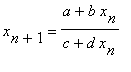
n = 0,1,... (1)In order to avoid unwanted cases, we must assume that both d and ad-bc do not equal zero.
The forbidden set F of the Riccati difference equation is the set of initial conditions which the denominator c+dxn will become zero for some non negative value of n.
Assume that the previous conditions hold and that the Riccati difference equation does possess a periodic solution of prime period two.
When b+c is equal to zero, we observe the every solution of the Riccati difference equation with x0 not equal to b/c is periodic of period 2.
In addition to the previous conditions, we will assume that b+c does not zero.
The change of variable for n non negative
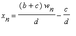
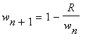
n = 0,1,...The nonzero real number
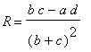
We can observe that when
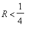
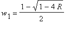
<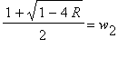
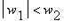
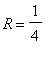
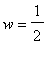
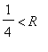
We now observe that the change of variables
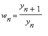
n = 0,1,...The sequence of points
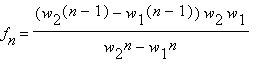
n = 1,2,...When w0 is not in the forbidden set F, the solution of Equation (1) is given by
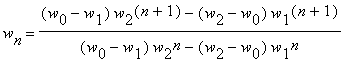
n = 1,2,...If we assume that
The sequence of points which converges to the equilibrium from the left
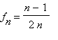
n = 0,1,....When w0 is not in the forbidden set F, the solution of the equation is given by
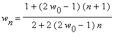
n = 0,1,....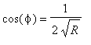
and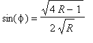
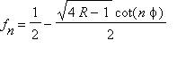
n = 1,2,...When w0 is not in the forbidden set F, the solution of Equation (1) is given by
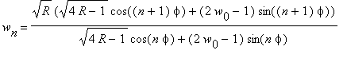
n = 0,1,...
If we assume that
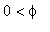
=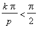
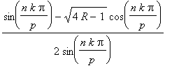
n = 1,2,...,p-1If we assume that the
number f is
not a rational multiple of p,then
the following statements are true:
(i) No solution of
the equation is periodic.
(ii) The set of limit
points of a solution of Equation 1 with w0 not in the forbidden
set F
is dense in R.
CLICK HERE TO EXPERIMENT WITH THE PARAMETERS AND INITIAL VALUES
Links Related to the Riccati Difference Equation
mathworld.wolfram.com
www.sosmath.com
Bio of Jacopo Francesco Riccati
Click here to go to Home Page for Difference
Equations at URI